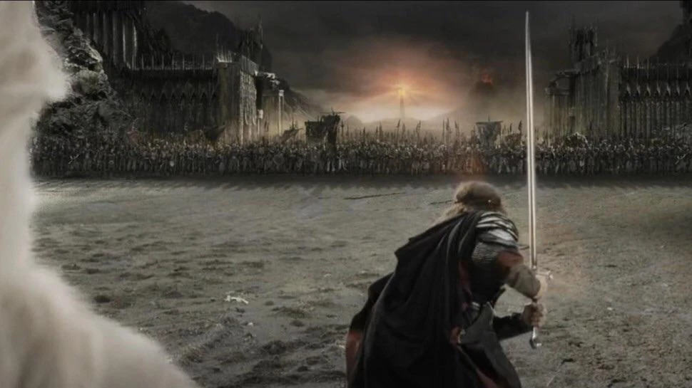

Curiosidades
Si alguna vez viste las peliculas de El Señor De Los Anillos con algún fan de la obra de Tolkien, seguramente esta persona no haya podido evitar hacer comentarios: datos curiosos, referencias a los libros o incluso memes que para muchos ya son parte de la experiencia de ver las pelis.
En esta sección, la cual llamamos "¿Sabías que...?" vamos a estar comentando algunos de estos datos y referencias que aparecen a lo largo de El Retorno Del Rey (tranquilo, Viggo Mortensen se quebró un dedo el pie en la primera película, no vas a estar leyendo ese fun fact por milésima vez en tu vida).
Peter Jackson: El Retorno Del Cameo

Se utilizaron cientos de extras durante el rodaje de la trilogía de 'El Señor de los Anillos'. Puede que Jackson simplemente estuviera anotado como parte del reparto. Después de hacer un cameo durante la Batalla del Abismo de Helm en 'Las Dos Torres' y en la aldea de Bree en 'La Comunidad Del Anillo', Jackson aparece nuevamente en 'El Retorno del Rey' en el barco de corsarios. Ni Jackson esperaba encontrarse con Aragorn, Gimli y Legolas allí...
¿Shelob debía aparecer antes?

No lo hemos mencionado demasiado en nuestros datos sobre esta película, pero Jackson cambió algunas cosas en la historia. Hay una diferencia importante que se manifiesta en “El Retorno del Rey”: Es en esta película donde Frodo es atacado por Shelob, la araña gigante. Sin embargo, en los libros, esto ocurre en “Las Dos Torres”.
La Batalla de la Puerta Negra: preocupaciones reales

La enorme Batalla de la Puerta Negra fue filmada en el desierto de Rangipo, en Nueva Zelanda. El lugar había sido en su momento un campo minado. Soldados del ejército de Nueva Zelanda participaron como extras, pero había una razón adicional para contar con gente experimentada en el set: Había guías allí para vigilar la presencia de minas sin explotar, por si acaso.
.jpg)